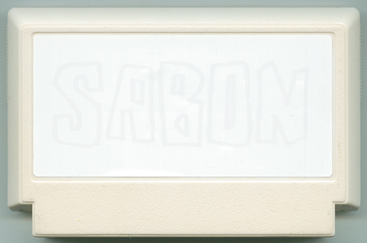
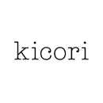

サボン
バーバー／美容師
はじめに、なりたい自分を登録し、主人公バイキンハンターがバイキン退治の旅に。邪悪なボスキャラ、バイ菌グを倒したら、エンディングでファミカセが、なんと石鹸に変化！ 石鹸になったファミカセで全身を洗うとまさか、、憧れの自分に！ 効き目はバイキンが付くごとに、元の自分に戻ってしまう。使用回数は、石鹸が全て無くなるまで。他の人が使っても、クリアした人だけに効果がある。
※貸しっこが出来ないソフト。